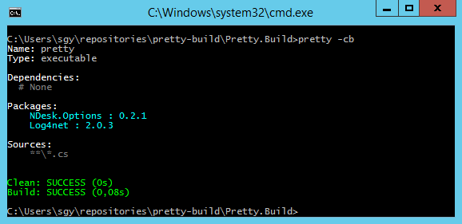
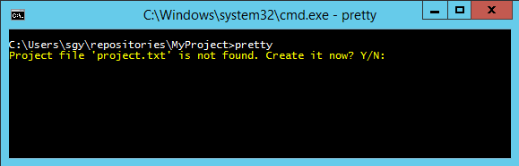

A convention-over-configuration alternative to MSBuild. No worries -- It's still using the plain ol' C# compiler that you are already familiar with.
> pretty -c
Cleans the output folder of the current project
> pretty -b
Builds the project in the current working directory
Getting Started
Using a command prompt, navigate to a new or existing project. Then just type 'pretty'.
Defaults
- Include all C# files when compiling
- Compile to a regular .NET library (.dll)
- Name the assembly after the directory containing the sources
Output is Input
The console output is in the same format as the input files, making it easy to create build files and keep them simple by relying on conventions.